Comparable
Package size, total price and unit price appear together so similar items can be evaluated quickly.
A grocery cart becomes a monthly plan.
A responsive planning tool for comparing grocery prices, shaping a realistic shopping routine and understanding recurring costs before moving to Japan.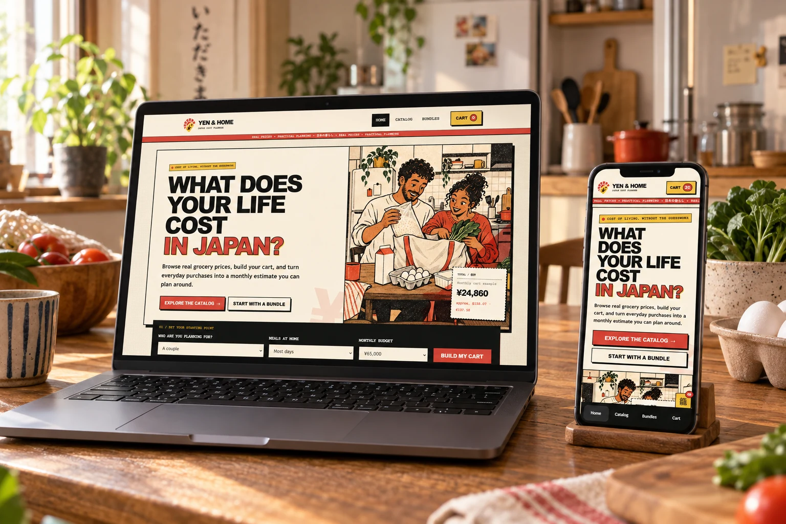
Yen & Home turns individual prices into a more useful question: what will this way of living cost each month?
The concept connects product comparison with personal context. Household size, meals at home, budget, quantities and shopping frequency all influence the estimate.
The interface uses a bold print-inspired identity to make dense information approachable while keeping every decision visible.
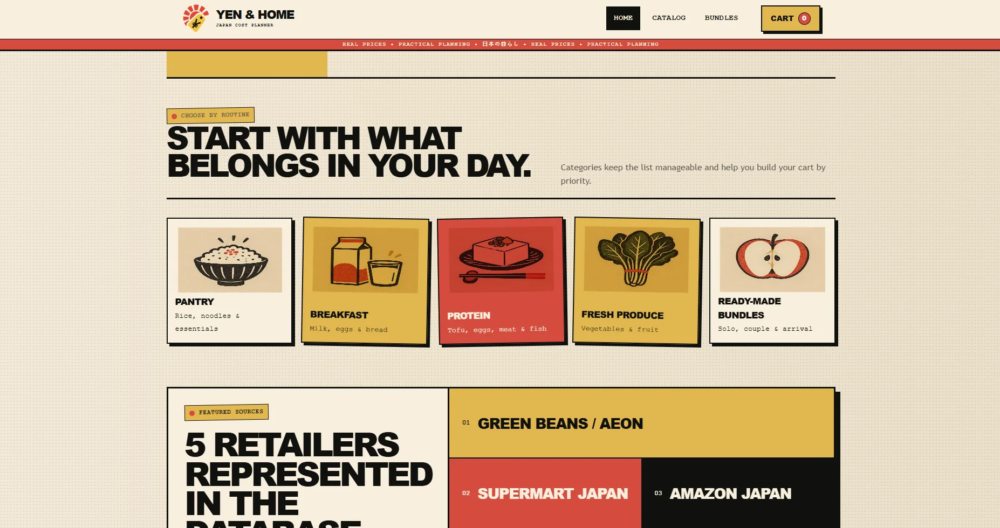
People planning a move can find isolated grocery prices, but translating packages, quantities and repeated purchases into a reliable monthly picture requires too much manual work.
Package size, total price and unit price appear together so similar items can be evaluated quickly.
Household size, budget and meal routine create a useful starting point without blocking exploration.
Quantity and purchase frequency turn a one-time cart into an estimate that supports planning.
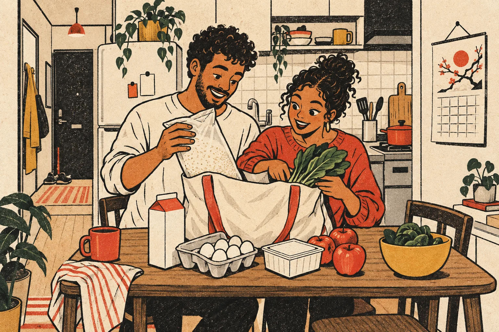
The illustration gives the abstract topic of cost planning a human context. Paper textures, offset color and direct typography make the product feel accessible without hiding the functional structure underneath.
Filtering and sorting stay close to the products, while the quick-comparison panel preserves budget context throughout the catalog.
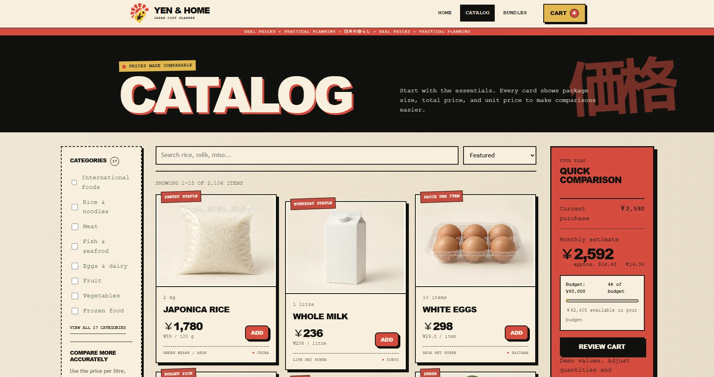
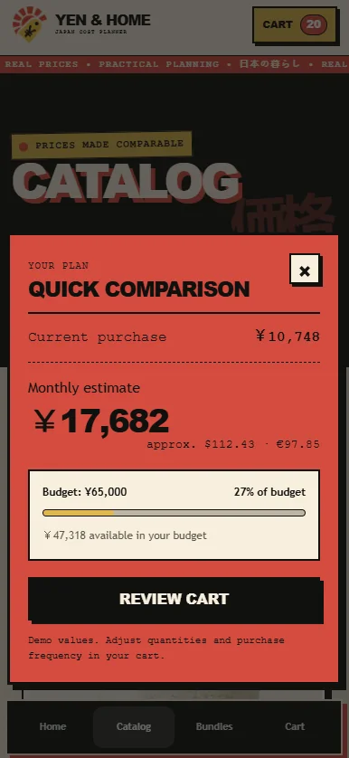
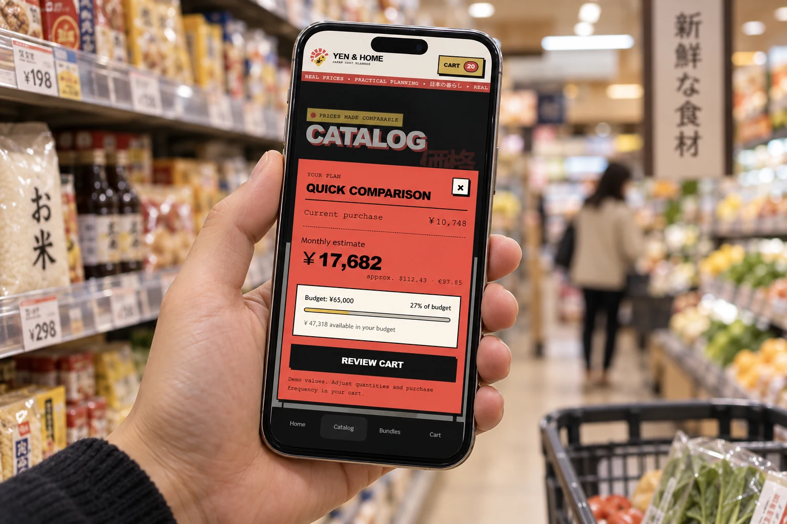
Solo, couple and routine-based bundles act as editable foundations. They never lock the user into a fixed package.
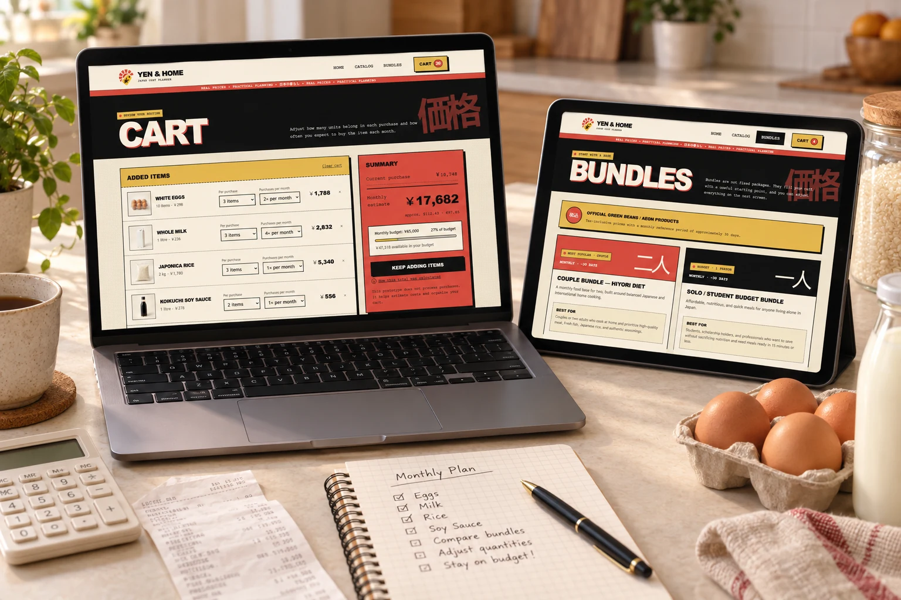
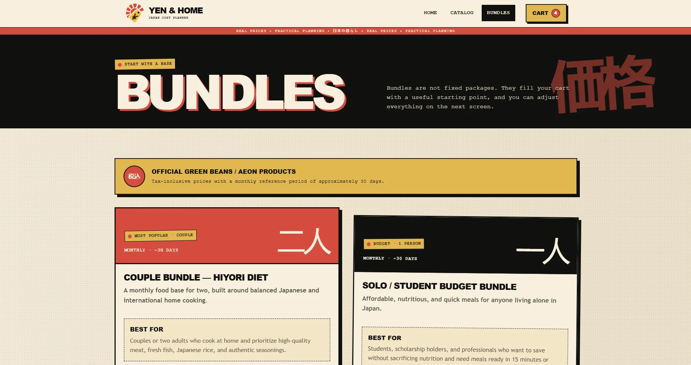
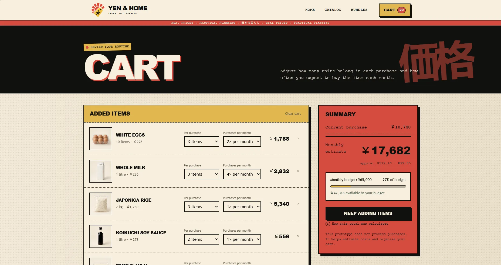
Swipe or scroll to see both screens→
The identity combines the decisiveness of price labels with the familiarity of grocery illustration. Repetition and rough edges make the interface memorable while strict spacing keeps it usable.
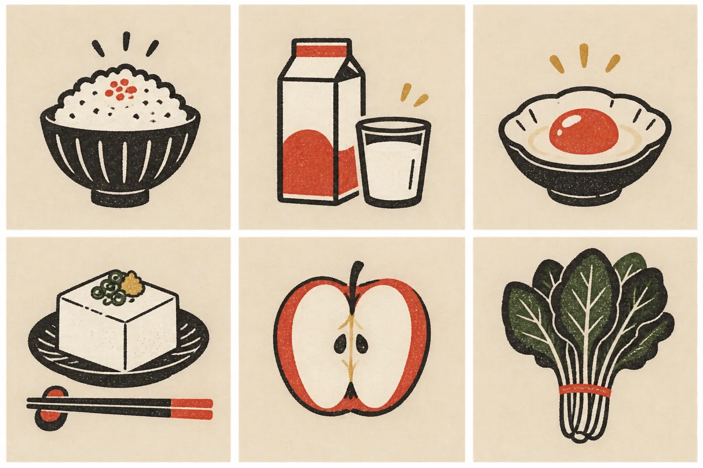
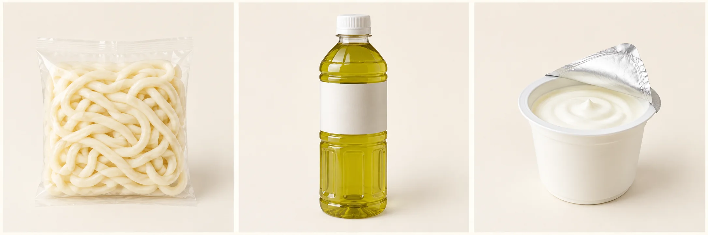
The final prototype connects brand character and practical product logic across desktop and mobile. It demonstrates catalog navigation, editable starting points, transparent calculations and a responsive cart experience.